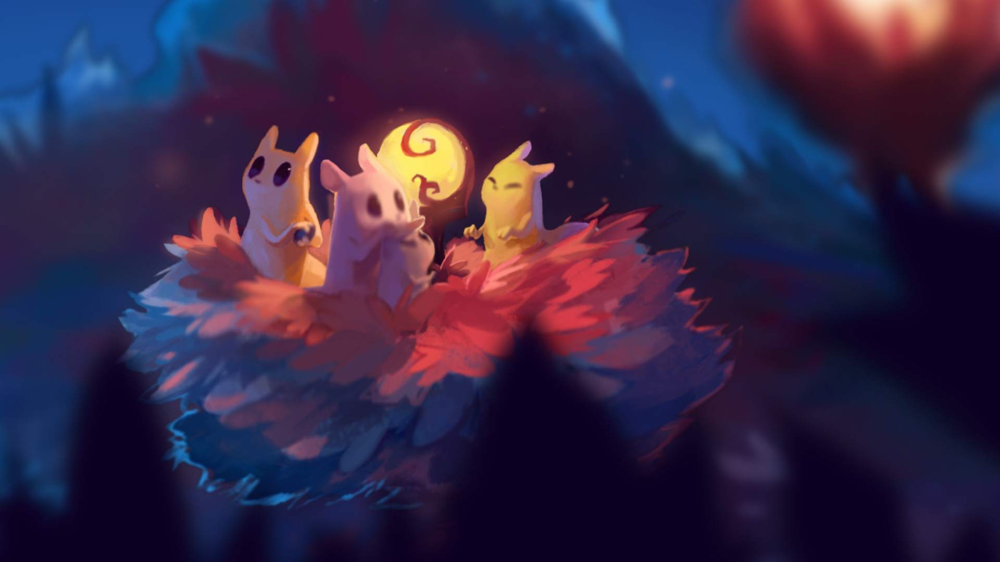

Для начала, кто такие слизнекоты:

Слизнекоты - это вид существ, обитающий во "Внешней дали" - месте, за пределами стен структур, в которых нам предстоит осваиваться. И вполне естественно, что не только один из них попал в этот новый 'мир'. Так что здесь мы разберем всех слизнекотов за которых нам придется поиграть. Однако перед этим стоит уточнить, что есть набор стандартных умений, которыми облажает каждый слизнекот без исключения. Среди таких, к примеру, способность поднимать и использовать копья, гальку и другие лежащие под лапой вещи, возможность бросать их, оглушая и нанося врагам урон. Этому вполне четко учит сама игра, а точнее её обучение. Здесь же мы будем рассматривать возможности, которые игра предоставляет вам к открытию. Например, прыжок назад, он же сальто. он позволяет вам, резко изменив направление, прыгнуть чуть выше, при этом имея возможность (О Боже!) воткнуть копье в землю, или кинуть вертикально вверх.